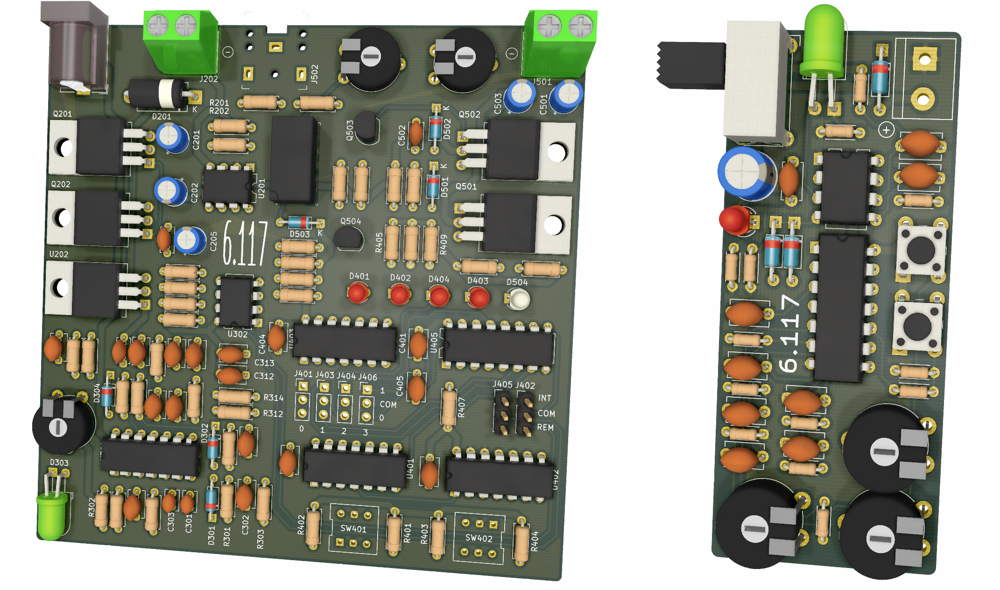

# Course Information ## Staff **Lecturer**: Sam Chinnery (chinnery) **TAs**: Tim Magoun (magoun), Savannah Inglin (singlin), Reed Foster (reedf) Contact us through email: *(kerberos)* at mit dot edu ## Overview This course is designed to introduce students to the fundamentals of practical electrical engineering (EE) in a relaxed, project-oriented environment. There are no prerequisites for this class; the only requirements are creativity and an interest in EE. Due to the limited availability of lab resources, **enrollment in this course is restricted to first-year students**. ## Prerequisites None ## Lectures Lectures will be held on **Monday and Wednesday, from 2:30 to 4:00pm in 4-231**. **Attendance at all lectures is mandatory**. ## Labs All lab work should be completed in the 6.117 lab space (**38-601**). There are three lab sections: - Section 1: **Monday/Wednesday, 4:00 – 7:00pm** - Section 2: **Tuesday/Thursday, 1:00 – 4:00pm** - Section 3: **Tuesday/Thursday, 4:00 – 7:00pm** Students will be assigned to their choice of section if possible. ## Grading This course is offered for 6 units of credit. Grades will be assigned on a **P/D/F** scale. All students who complete the lab assignments in good faith and attend all lectures should expect to pass. # Course Material ## Objectives The 2018 Undergraduate Perceptions Survey revealed a significant difference in the perception of EE at MIT between people internal to and external to the department. This course is intended to mitigate that difference by providing opportunities for students to engage with EE in a project-oriented environment and establishing a community of like-minded individuals interested in EE as a major or for personal projects. This course provides a comprehensive overview to practical EE through **lectures, labs and a design project**. The lectures will introduce students to **basic circuit techniques**, including Kirchoff’s laws (KVL and KCL), intuitive analysis and simulation. The lab assignments are designed to familiarize students with the use of **EE lab equipment**, including power supplies, oscilloscopes and function generators. Following the completion of two lab assignments, students will work on a larger design project assignment. The design project is designed to expose students to more **complex systems while maintaining a hands-on approach**. Course staff will be available throughout the course and will provide guidance to students during the labs and project. ## Lectures A tentative schedule of lectures is as follows: - Lecture 1: **Introduction and basic circuit theory** *Wednesday, January 15* - Course overview and logistics - Common acronyms, units, and symbols; voltage and current - Passive circuit elements: resistors, capacitors, inductors; Ohm’s law, voltage dividers - Lab equipment overview, lab safety, prototyping - Lecture 2: **Intermediate circuit theory, active components** *Monday, January 20* - Impedance and passive filtering (low-pass, high-pass, band-pass) - Active components: LEDs, BJTs, MOSFETs, Op-amps - Op-amp circuits: Inverting amplifier, non-inverting amplifier, second-order filters - Audio amplification, crossover distortion, push-pull output stage - Lecture 3: **Digital Circuits, Power Supplies, and Regulation** *Wednesday, January 22* - Digital abstraction: logic gates, flip-flops, and shift registers - Voltage regulators, power supplies, switching converters - Bistable multivibrator, LM555 timer circuits, LM567 tone detector - Design project overview, infrared communications and transimpedance amplifiers - Lecture 4: **Physical Design Considerations** *Monday, January 27* - Schematic capture, component selection, system coexistence - PCB layout and fabrication process, routing considerations - Parasitic capacitance, inductance, resistance, power distribution and decoupling - Circuit simulation in LTSpice - Lecture 5: **Digital system design and architecture; conclusion** *Wednesday, January 29* - CMOS logic design, hardware synthesis and FPGAs - CPU architecture overview - Modulation (AM, FM, PSK, QAM), mixing, convolution and demodulation - Course conclusion, 6-1 and 6-2 major overview - 6-1 Experience Panel (*optional*): **Q&A Session on EE Careers and Classes** *Friday, January 31* - Learn more about EE - Talk to upperclassmen in Course 6-1 and 6-2 - Food will be served ## Labs Students will complete two introductory lab assignments prior to the design project. Each lab will include instructions on how to conduct the lab as well as a short handout. The lab assignments are designed to be **completed during one 3-hour lab session**. **Lab 1** familiarizes students with basic EE lab equipment and standard lab procedures. Exercises will include measurements with digital multimeters (DMMs) and oscilloscopes, basic function generator operation, and construction of a simple oscillator using the LM555 timer. **Lab 2** will cover intermediate circuit techniques presented in Lecture 2. Exercises will introduce active components, including common-emitter BJT amplifiers and simple op-amp circuits (inverting amplifiers, non-inverting amplifiers and second-order filters). Students will construct a discrete Class AB audio amplifier using a push-pull BJT output stage. ## Design Project The design project will be distributed following the completion of Lab 1 and 2. The design project is intended to allow students to engineer a **complex, mixed-signal system**. The design project will incorporate principles from Lecture 1 – 3 and is intended to be easily understandable. After completing the design project, students will have designed and assembled a self-contained audio amplifier with remote lock/unlock capabilities. The digital lock can be repurposed to control a variety of devices. The design project will be completed in **three lab sessions**. During the first session, students will complete the digital lock/unlock circuit. The digital lock will be implemented using a shift register and a digital comparator, which will activate when a specific 4-bit password is presented at the input. During the second session, students will complete the audio amplifier. The audio amplifier is implemented as a 1-watt Class AB amplifier driven by a Class A preamplifier. During the third session, students will complete the remote-control circuitry and finish any remaining components from previous sessions. Remote functionality will be implemented with a 38 kHz amplitude-modulated (AM) infrared receiver/transmitter system. ## Timeline A tentative schedule of all lectures, labs and assignments is as follows:Following the completion of the course, an EE opportunities and experiences panel will be held as an opportunity for first-year students to deepen their knowledge of Course 6-1 and EE-related opportunities and careers. Food will be provided. The panel will be held on **Friday, January 31, from 1 – 3pm in 4-231**.